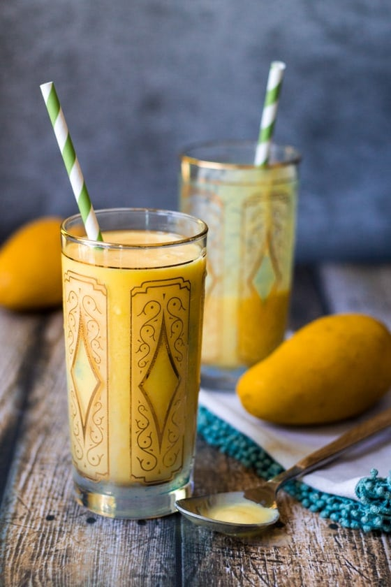

Mango Lassi

Description
Lassi is a popular, traditional, yogurt-based drink that originated in India.
Indian Lassi is a blend of yogurt, water, spices and sometimes fruit.
With such a broad definition, there are many different variations of Lassi, but the
Indian Mango Lassi is one of the most popular variants.
Ingredients
- 1 cup chopped very ripe mango
- 1 cup plain yogurt
- 1/2 cup milk
- 4 teaspoons honey or sugar, more or less to taste
- [OPTIONAL] Dash ground cardamom
- [OPTIONAL] Ice
Steps to make Mango Lassi
- Put the mango, yogurt, milk, honey/sugar and cardamom into
a blender and blend for 2 minutes
-
Serve the contents in a glass with a sprinkle of cardamom